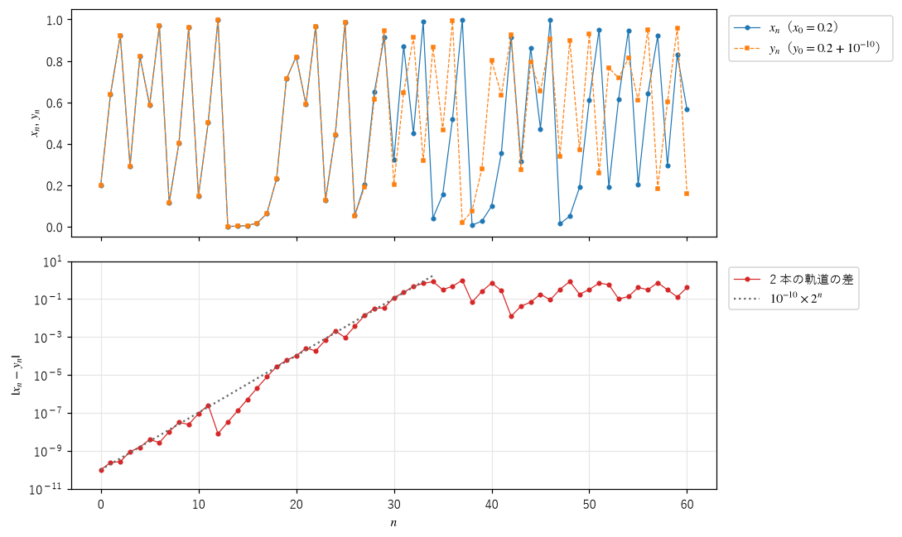
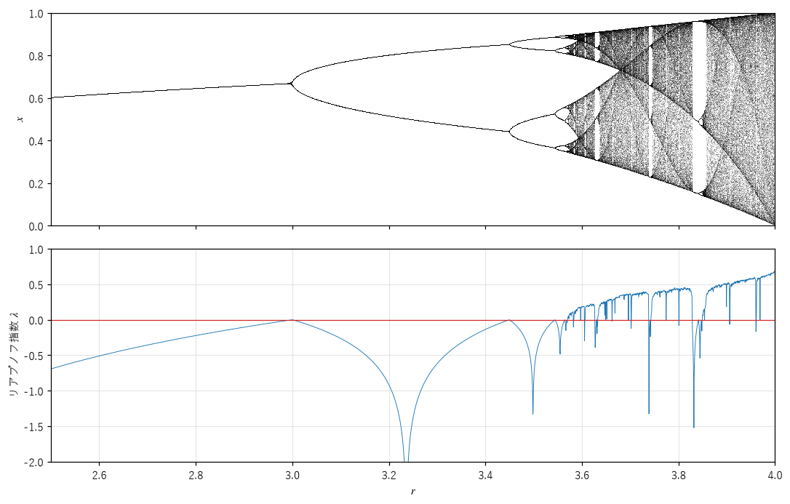

第 5 章 カオスの特徴付け
第 4 章では、分岐図を見て「点が帯状に広がっている」ことからカオスを判断した。しかし、周期が非常に長い周期軌道や、ゆっくりと変化する過渡状態も、図の上では同じように見えることがある。この章では、カオスを数値で判定する方法と、カオスの数学的な定義を説明する。また、コンピュータでカオスを計算するときに避けられない、丸め誤差の問題を考える。
初期値鋭敏性
カオスの最も重要な特徴は、初期値鋭敏性（sensitive dependence on initial conditions）である。初期値のわずかな違いが、時間とともに急速に拡大し、やがて軌道がまったく別物になる。
図 19 は、\(r = 4\) のロジスティック写像で、初期値が \(10^{-10}\) だけ違う 2 つの軌道 \(x_n\) と \(y_n\) を比べたものである。


図 19 初期値が \(10^{-10}\) だけ違う 2 つの軌道（上）と、その差（下、縦軸は対数目盛り）
上の図では、2 つの軌道は最初の 25 回ほどは完全に重なっているが、30 回目あたりから急に離れ、その後はまったく無関係に動く。下の図は差の絶対値を対数目盛りで描いたもので、差はほぼ直線的に、つまり指数関数的に大きくなっている。点線は \(10^{-10} \times 2^n\) で、差は 1 回の反復で平均して約 2 倍になることが分かる。差が 1 程度になると、区間 \([0, 1]\) より大きくはなれないので、増加は止まる。
この性質は、俗にバタフライ効果（butterfly effect）と呼ばれる。気象学者のエドワード・ローレンツが 1972 年に行った講演の題名「ブラジルで 1 匹の蝶がはばたくと、テキサスで竜巻が起きるか」に由来する。
リアプノフ指数
初期値の差が指数関数的に大きくなる速さを表す量が、リアプノフ指数（Lyapunov exponent）である。初期値の差を \(\delta_0\)、\(n\) 回反復した後の差を \(\delta_n\) とすると、
と表せるときの \(\lambda\) がリアプノフ指数である。\(\lambda > 0\) なら差は指数関数的に拡大し、\(\lambda < 0\) なら縮小する。
1 次元の写像では、リアプノフ指数を軌道に沿った微分係数から計算できる。差が十分小さければ、1 回の反復で差は \(|f'(x_k)|\) 倍になる（第 2 章の線形化）。したがって、\(n\) 回の反復で差は \(|f'(x_0)|\,|f'(x_1)| \cdots |f'(x_{n-1})|\) 倍になる。これを \(e^{\lambda n}\) と等しいとおいて対数をとると、
が得られる。つまり、リアプノフ指数は、軌道に沿った「1 回あたりの引き伸ばし率の対数」の平均である。ロジスティック写像では \(f'(x) = r(1 - 2x)\) なので、次のように計算できる。
18def lyapunov_exponents(r: NDArray[np.float64], n: int = 2000, transient: int = 500) -> NDArray[np.float64]:
19 """配列 r の各要素について、リアプノフ指数をまとめて計算する."""
20 x = np.full(r.shape, 0.4)
21 for _ in range(transient):
22 x = r * x * (1.0 - x)
23 total = np.zeros(r.shape)
24 for _ in range(n):
25 x = r * x * (1.0 - x)
26 # 微分が 0 になる点（x = 1/2）を通ると log 0 になるので、ごく小さな値で下から抑える
27 total += np.log(np.maximum(np.abs(r * (1.0 - 2.0 * x)), 1e-300))
28 result: NDArray[np.float64] = total / n
29 return result
図 20 は、分岐図とリアプノフ指数を、横軸をそろえて並べたものである。


図 20 ロジスティック写像の分岐図（上）とリアプノフ指数（下）
次のことが読み取れる。
固定点や周期軌道に落ち着く \(r\) では、\(\lambda < 0\) である。周期軌道が安定であることは、近くの軌道が近づいてくる（差が縮む）ことを意味するからである。
周期倍分岐の点（\(r = 3\)、3.449、……）では、\(\lambda = 0\) になる。ここでは周期軌道の安定性がちょうど失われる。
超安定なパラメータでは、軌道が微分 0 の点を通るので \(\log 0 = -\infty\) となり、グラフが下に鋭く落ち込む。
\(r_\infty \approx 3.5699\) より大きい多くの \(r\) で \(\lambda > 0\) となり、カオスであることが分かる。窓の中では \(\lambda < 0\) に戻る。
いくつかの \(r\) での値を次に示す。\(r = 4\) では、理論値 \(\log 2 \approx 0.693\) とよく一致する。図 19 で差が 1 回あたり約 2 倍になったのは、\(e^{\lambda} = 2\) だからである。
r = 2.80: λ = -0.2231
r = 3.20: λ = -0.9163
r = 3.50: λ = -0.8725
r = 3.83: λ = -0.3697
r = 3.90: λ = +0.4950
r = 4.00: λ = +0.6932
log 2 = 0.6931
2 次元以上の系では、方向によって引き伸ばされ方が違うので、次元の数だけリアプノフ指数がある。その中で最大のものが正であれば、少なくとも 1 つの方向に差が拡大するので、カオスと判定できる。最大リアプノフ指数を数値的に求めるには、わずかに離れた 2 つの軌道を同時に計算し、差の伸び率を記録しては差を元の大きさに戻す（再規格化する）ことを繰り返す。この方法は第 12 章で、アトラクタを自動的に探すために使う。
予測できる時間の限界
リアプノフ指数が \(\lambda > 0\) の系で、初期値の誤差が \(\delta_0\)、予測を役に立たないとみなす誤差の大きさが \(\Delta\) だとする。\(\delta_0\,e^{\lambda T} = \Delta\) を解くと、予測できる時間は
となる。注目すべきは、\(T\) が \(\delta_0\) の対数に比例することである。初期値の精度を 10 倍にしても、予測できる時間は \(\log 10 / \lambda\) しか延びない。測定の精度を 100 万倍にしても、予測できる時間は数倍にしかならない。天気予報が 2 週間程度より先を予報できないのは、大気の運動にこのような限界があるためと考えられている。
カオスの定義
カオスにはいくつかの数学的な定義がある。よく引用されるのは、デバニーによる次の定義である。集合 \(X\) 上の写像 \(f\) が次の 3 つの性質を持つとき、\(f\) は \(X\) 上でカオス的（chaotic）であるという。
初期値鋭敏性：どの点のどんなに近くにも、軌道が（点によらない）一定の距離以上離れていく点がある。
位相推移性（topological transitivity）：\(X\) のどの 2 つの領域についても、一方から出発して他方に入る軌道がある。系を 2 つの独立な部分に分けられないことを表す。
周期点の稠密性：\(X\) のどの点のどんなに近くにも、周期点がある。
3 つ目の性質は意外に思えるかもしれない。カオスの中には、不安定な周期軌道が無数に埋め込まれていて、カオス的な軌道はそれらの間をさまよっていると考えられる。後に、2 と 3 が成り立てば（\(X\) が無限集合なら）1 も成り立つことが証明された。
実用上は、次の 3 つを満たす振る舞いをカオスと呼ぶことが多い。
軌道が有界な領域にとどまる。
軌道が周期的でなく、固定点にも周期軌道にも近づかない。
最大リアプノフ指数が正である。
記号力学
カオスが「決定論的なのに偶然のように見える」理由は、記号力学（symbolic dynamics）と呼ばれる考え方で分かりやすく説明できる。
区間 \([0, 1)\) 上の写像 \(D(x) = 2x \bmod 1\)（2 倍して整数部分を捨てる）を考える。\(x\) を 2 進数で \(x = 0.b_1 b_2 b_3 \ldots\) と書くと、2 倍は小数点を 1 桁右に移すことであり、整数部分を捨てると \(D(x) = 0.b_2 b_3 b_4 \ldots\) となる。つまり、この写像は 2 進数の桁を 1 つずつ左にずらす操作（シフト写像）にすぎない。
ここで、\(x_n < 1/2\) なら記号 0、\(x_n \ge 1/2\) なら記号 1 を記録すると、得られる記号の列は \(b_1, b_2, b_3, \ldots\) そのものになる。したがって、
初期値の 2 進数の桁が、将来の振る舞いを順に決めている。\(n\) 回後の記号は、初期値の \(n + 1\) 桁目で決まる。初期値をわずかに変えると、遠い桁が変わり、しばらく後の振る舞いが変わる。これが初期値鋭敏性である。
無作為に選んだ実数の 2 進数の桁は、コインを投げて表と裏を記録した列と区別できない。決定論的な写像の軌道から、コイン投げと同じ不規則な記号の列が得られる。
テント写像や \(r = 4\) のロジスティック写像も、変数を変換すると、本質的に同じシフト写像として理解できる。たとえば \(r = 4\) のロジスティック写像は、\(x = \sin^2(\pi\theta/2)\) と置くと、\(\theta\) についてのテント写像になる。
浮動小数点数の影響
コンピュータの浮動小数点数は有限の桁しか持たない。Python の float（倍精度、float64）は 2 進数で 53 桁（10 進数で約 16 桁）、float32（単精度）は 24 桁（約 7 桁）である。計算のたびに、桁に収まらない部分は丸められる。カオス的な系では、この丸め誤差も初期値の誤差と同じように拡大される。
次の出力は、\(r = 4\) のロジスティック写像を、初期値 0.2 から float32、float64、100 桁の 10 進数（Python の decimal モジュール）で計算し、比べたものである。
n decimal(100 桁) float64 float32
0 0.200000 0.200000 0.200000
10 0.147837 0.147837 0.147865
20 0.820014 0.820014 0.787269
30 0.320342 0.320342 0.509365
40 0.097917 0.097874 0.026980
50 0.539206 0.611733 0.399137
60 0.368811 0.564750 0.101796
decimal との差が 0.1 を超える最初のステップ: float32 は 23、float64 は 52
テント写像を float64 で計算すると、x0 = 0.3 の軌道は 55 回で 0 になる
100 桁の結果との差が 0.1 を超えるのは、float32 では 23 回目、float64 では 52 回目である。0.2 は 2 進数では有限の桁で表せない（循環小数になる）ので、float32 と float64 では初期値の時点ですでに丸められている。その誤差と、毎回の計算の丸め誤差が、1 回あたり約 2 倍に拡大される。相対的な誤差は float32 では約 \(2^{-24}\)、float64 では約 \(2^{-53}\) なので、それが 1 程度になるまでの回数は約 24 回と約 53 回であり、結果とよく一致する。100 桁の計算も無限の精度ではないので、約 330 回（\(10^{-100} \approx 2^{-332}\)）でいずれ同じ問題が起きる。
最後の行は、さらに極端な例である。テント写像は 2 進数の桁をずらす操作なので、float64 で計算すると、仮数部の 53 桁が 1 回ごとに 1 桁ずつ押し出され、約 55 回ですべての桁が 0 になってしまう。数学的には区間全体を動き回るはずの軌道が、0 に吸い込まれて止まる。
では、コンピュータで計算したカオスの軌道は意味がないのだろうか。実は、双曲型と呼ばれる種類のカオス的な系では、数値計算で得た軌道（誤差を含む軌道）のすぐ近くに、別の初期値から出発した本物の軌道が存在することが証明されている。この性質をシャドウイング（shadowing）という。個々の軌道の長期予測はできなくても、アトラクタの形や、リアプノフ指数のような統計的な性質は、数値計算で信頼して求められる。ローレンツ方程式やエノン写像のような多くの系は双曲型ではないので完全な保証はないが、同じ性質がおおむね成り立つと考えられており、数値実験の結果もそれを支持している。本書の図は、この意味で信頼できると考えてよい。ただし、テント写像のように、浮動小数点数の仕組みと相性の悪い写像には注意が必要である。
まとめ
カオスの最も重要な特徴は初期値鋭敏性である。初期値の差は指数関数的に拡大する。
リアプノフ指数 \(\lambda\) は、差が拡大する速さを表す。1 次元の写像では、軌道に沿った \(\log|f'(x_k)|\) の平均として計算できる。有界な軌道で \(\lambda > 0\) ならカオスと判定できる。
予測できる時間は、初期値の精度の対数にしか比例しないので、精度を上げても大きくは延びない。
記号力学の考え方では、カオスは初期値の桁を順に読み出す操作として理解できる。
浮動小数点数の丸め誤差もカオスによって拡大される。個々の軌道は信頼できないが、アトラクタの形や統計的な性質は信頼できる。